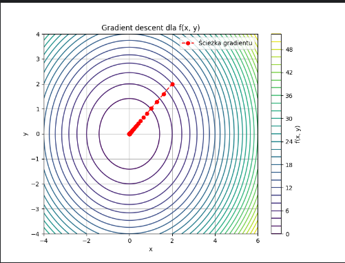
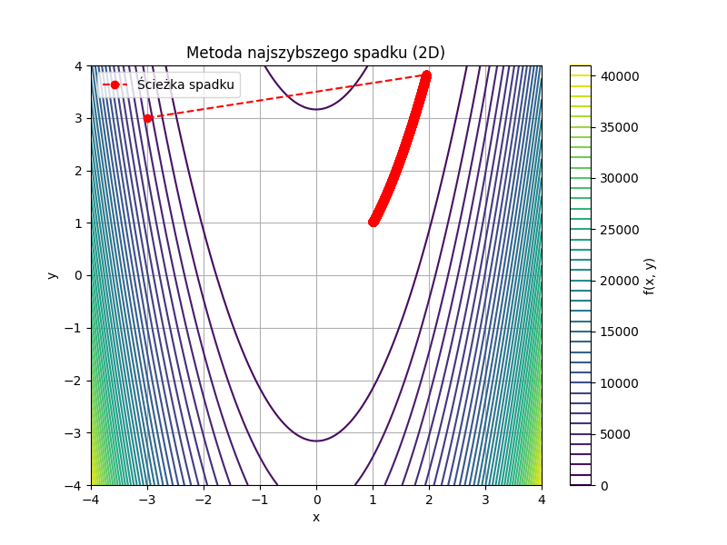

Optymalizacja to dziedzina matematyki i informatyki zajmująca się znajdowaniem najlepszych rozwiązań dla danego problemu w określonych warunkach. W kontekście funkcji wielu zmiennych, optymalizacja polega na znalezieniu takich wartości zmiennych, które minimalizują (lub maksymalizują) wartość funkcji celu.
Proces optymalizacji jest nieodzownym elementem nowoczesnych technologii. Odgrywa kluczową rolę w inżynierii (np. minimalizacja zużycia materiałów), ekonomii (maksymalizacja zysków, minimalizacja kosztów), biologii (modelowanie ekosystemów), aż po sztuczną inteligencję (np. uczenie maszynowe, dostrajanie parametrów modeli).
Funkcje celu w optymalizacji mogą mieć różny charakter: mogą być wypukłe, niewypukłe, gładkie, nieliniowe, a nawet dyskretne. W zależności od właściwości tych funkcji, stosuje się różne metody optymalizacji, takie jak metody gradientowe, bezgradientowe, heurystyczne i inne. W tym materiale skupimy się na wybranych metodach numerycznych wykorzystywanych przy funkcjach wielu zmiennych, ze szczególnym uwzględnieniem metody największego spadku.
Opis: Iteracyjna metoda, która w każdym kroku porusza się w kierunku przeciwnym do gradientu funkcji, aby jak najszybciej zmniejszyć jej wartość.
Zalety:
Wady:
Zastosowanie: Gdy mamy pochodne i stosunkowo proste funkcje.
import matplotlib.pyplot as plt
import numpy as np
from sympy import *
# =========================
# 1. Symboliczne pochodne
# =========================
x_sym, y_sym = symbols('x y')
# Funkcja celu f(x, y)
f_expr = x_sym**2 + y_sym**2
# Gradient symbolicznie
grad_expr = Matrix([diff(f_expr, var) for var in (x_sym, y_sym)])
# Zamiana na funkcje numeryczne
f = lambdify((x_sym, y_sym), f_expr, 'numpy')
grad_f = lambdify((x_sym, y_sym), grad_expr, 'numpy')
# =========================
# 2. Parametry algorytmu
# =========================
point = np.array([2.0, 2.0]) # punkt startowy (x, y)
eta = 0.1 # krok
tolerance = 1e-6
max_iter = 1000
points = [point.copy()]
print("=== Gradient Descent Log ===\n")
# =========================
# 3. Gradient descent loop
# =========================
for i in range(max_iter):
grad = np.array(grad_f(*point)).astype(float).flatten()
new_point = point - eta * grad
step_size = np.linalg.norm(new_point - point)
# Logowanie
print(f"Iteracja {i + 1}:")
print(f" Punkt: {point}")
print(f" f(x, y): {f(*point):.6f}")
print(f" Gradient: {grad}")
print(f" Długość kroku: {step_size:.6e}\n")
points.append(new_point.copy())
if step_size < tolerance:
print(f"✅ Zbieżność osiągnięta po {i+1} iteracjach.\n")
break
point = new_point
# =========================
# 4. Wynik końcowy
# =========================
print("=== Wynik końcowy ===")
print(f"Minimum znalezione w punkcie ≈ {point}")
print(f"f(x, y) ≈ {f(*point):.6f}")
# =========================
# 5. Wykres poziomic + ścieżka
# =========================
X, Y = np.meshgrid(np.linspace(-4, 6, 400), np.linspace(-4, 4, 400))
Z = f(X, Y)
points = np.array(points)
plt.figure(figsize=(8, 6))
contour = plt.contour(X, Y, Z, levels=30, cmap='viridis')
plt.plot(points[:, 0], points[:, 1], 'ro--', label='Ścieżka gradientu')
plt.scatter(points[-1, 0], points[-1, 1], color='red', zorder=5)
plt.xlabel("x")
plt.ylabel("y")
plt.title("Gradient descent dla f(x, y)")
plt.grid(True)
plt.legend()
plt.colorbar(contour, label="f(x, y)")
plt.show()
✅ Zbieżność osiągnięta po 61 iteracjach.
=== Wynik końcowy ===
Minimum znalezione w punkcie ≈ [3.06499108e-06 3.06499108e-06]
f(x, y) ≈ 0.000000

Opis: Zaawansowana wersja Steepest Descent. W przeciwieństwie do klasycznego podejścia, zamiast kierunku największego spadku używa tzw. kierunków sprzężonych. Dzięki temu unika oscylacji w dolinach funkcji i szybciej osiąga minimum, zwłaszcza w przypadku funkcji kwadratowych.
Każdy nowy kierunek obliczany jest jako kombinacja kierunku gradientu oraz poprzedniego kierunku. To pozwala zredukować liczbę iteracji i poprawia efektywność, szczególnie w przypadku dużych i rzadkich układów liniowych.
Zalety: Duże systemy równań, optymalizacja funkcji kwadratowych.
# Dane:
# A – macierz (n x n), symetryczna i dodatnio określona
# b – wektor wynikowy
# x0 – punkt początkowy
# ε – tolerancja dokładności
# max_iter – maksymalna liczba iteracji
1. Ustaw x = x0
2. Oblicz r = b - A·x # wektor reszt
3. Ustaw p = r # kierunek początkowy
4. Dla k = 0, 1, 2, ..., aż do max_iter:
a. Oblicz α = (rᵗ·r) / (pᵗ·A·p)
b. Zaktualizuj x = x + α·p
c. Oblicz r_new = r - α·A·p
d. Jeśli ||r_new|| < ε, przerwij (zbieżność)
e. Oblicz β = (r_newᵗ·r_new) / (rᵗ·r)
f. Zaktualizuj p = r_new + β·p
g. Ustaw r = r_new
5. Zwróć x jako przybliżone rozwiązanie układu Ax = b
Opis: Metoda nie wymagająca znajomości pochodnych funkcji celu. Działa przez przeszukiwanie przestrzeni rozwiązań według określonego schematu (wzorca), sprawdzając, czy w jego sąsiedztwie wartość funkcji celu się poprawia. W przeciwnym razie zmniejsza krok i próbuje ponownie.
Jest szczególnie przydatna w sytuacjach, gdzie funkcja jest szumowa, nieliniowa, nigdzie niegładka lub nieciągła. Dzięki temu znajduje zastosowanie w inżynierii oraz optymalizacji eksperymentalnej.
Zalety: Problemy, gdzie pochodne są niedostępne lub funkcja jest nieregularna.
Opis: Znana również jako "banana function" ze względu na kształt doliny, funkcja Rosenbrocka to klasyczny benchmark w testowaniu algorytmów optymalizacyjnych. Zawiera trudne do pokonania krzywizny i długą, wąską dolinę prowadzącą do globalnego minimum.
Wzór: \( f(x, y) = (a - x)^2 + b(y - x^2)^2 \), zwykle \( a = 1, b = 100 \). Funkcja ta jest ciągła i różniczkowalna, ale trudna do optymalizacji klasycznymi metodami.
Zastosowanie: Testowanie efektywności metod optymalizacji.
